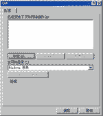
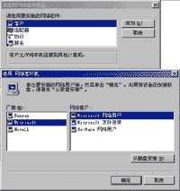

|
|
| 当前位置：电脑报电子版 > 1999 年 > 33 期 > 大众网络 > 新手上网步步高——上网设置篇 |
| 《 新手上网步步高——上网设置篇 》 |
| 上期我们已经安装好了MODEM，现在让我们看看如何进行上网的设置。 首先，让我们查看一下在你的Windows95或是Windows98里是否安装了下列部件：拨号网络适配器，TCP／IP通讯协议、Microsoft网络客户。此外，在“我的电脑”中，需要完成“拨号网络”的安装。如没有，请跟我来。 一、 安装 1. 在“我的电脑”的“控制面板”中，找到“添加／删除程序”选项，双击打开； 2. 打开“安装Windows”标签，选择“组件”下的“通讯”，选定“拨号网络”组件； 3. 单击确定后，系统会自动提示需要“Windows95／98”安装光盘，将光盘插入后按“确定”； 4. 安装完毕，系统提示重新启动计算机，选择“是”； 5. 系统重新启动后，在“控制面板”中打开“网络”图标进行网络设置； 6. 选择“配置”标签，查看系统是否已经安装“Microsoft网络客户”、“拨号网络适配器”及“TCP／IP”； 7. 先跟我安装“Microsoft网络客户”，点击“添加”按钮，选定“客户”栏，点击“添加”按钮，系统弹出“选择网络客户机”菜单，左侧选择厂商“Microsoft”,在右边菜单中选定“Microsoft网络客户”，按“确定”即可。 8. 回到“网络”窗口，选择“配置” 标签。单击“添加”按钮，选定“协议”单击“添加”，在弹出的“选定网络协议”菜单中，选择Microsoft的“TCP／IP”后，确定。 9.同样如法炮制，安装“适配器”，选择Microsoft的“拨号网络适配器”。 10.其实，在已安装过网络组件的Windows98系统中，只需安装以上三个组件中的一个，系统即可自动安装其余组件，对初学者来说，就更加简单了。 11.最后，在“网络”窗口中，选择“标识”标签，输入你的计算机名称等信息。重新启动后，网络配置便告完成。 二、 TCP／IP的设置 TCP／IP的设置，初学者可以不必理会，全部选项均可使用默认值即可。 如需改变设置，可根据网络服务商的安排进行。在“控制面板”中的“网络”选项中，选定“TCP／IP”，单击“属性”对话框，然后根据需要进行设置。 三、 设置拨号网络 完成了以上的步骤，现在开始拨号上网的最后设置——拨号网络设定。 1. 打开“我的电脑”，开启“拨号网络”文件夹。 2. 双击“新建连接(Windows95)”或“建立新连接（Windows98）”。取好自己连接的名称后（随意取名），按“下一步”继续，然后只需键入网络服务商的拨号号码即可，例如:中国电信的“163”，国家地区名选中国（86）。 3. 建立好你的连接后，此时拨号网络文件夹中已经多了一个图标，就是你建好的连接。如需修改属性，可选定此图标，单击鼠标右键，选择属性即可，一般不必改变它的属性。 大功告成!让我们来测试一下拨号网络连接是否正确。请将鼠标移至新建的连接，启动连接设定，请在连接对话框中输入你的用户名和口令，点 击“连接”。你可以看到桌面上的一连串的状态变化，当你看到“已连接到ChinaNet”画面框时，你已0.经正式上网了，如果你还想知道以后又该如何，咱们下周再聊。 (万维） |
| 下载本期推荐软件 | 页 首 |
| 《电脑报》版权所有，电脑报网站编辑部设计制作发布 |